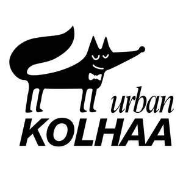

Trade Mark Journal No.2025/044 31 October 2025
UK00004271037 29 September 2025 (18,25)

- Class 18
- Leather and imitations of leather; Imitations of leather; Leather and imitation leather; Leather; Leather (Imitation -); Imitation leather; Moleskin [imitation of leather]; Moleskin [imitation leather]; Imitation leather bags; Handbags made of imitations leather; Leather handbags; Cases of imitation leather; Synthetic leather; Straps made of imitation leather; Leather cloth; Bags made of imitation leather; Tanned leather; Leather purses; Polyurethane leather; Leather thongs; Laces (Leather -); Leather laces; Saddlery of leather; Leather for shoes; Leather briefcases; Leather straps; Straps (Leather -); Mycelium-based imitation leather; Leather for furniture; Sheets of imitation leather for use in manufacture; Leather wallets; Handbags made of leather; Leather bags; Imitation leather hat boxes; Leather cords; Boxes of leather or leather board; Leather pouches; Pouches of leather; Vegan leather; Girths of leather; Imitation leather sold in bulk; Straps of leather [saddlery]; Briefcases [leather goods]; Studs of leather; Bands of leather; Travelling bags made of imitation leather; Attache cases made of imitation leather; Briefcases made of leather; Unworked leather; Key cases of imitation leather; Leather cord; Leashes (Leather -); Leather leashes; Leather for harnesses; Leather suitcases; Leather cases; Trimmings of leather for furniture; Leather trimmings for furniture; Furniture (Leather trimmings for -); Leather boxes; Boxes of leather; Labels of leather; All-purpose leather straps; Valves of leather; Bags made of leather; Key-cases of leather and skins; Card holders made of imitation leather; Leather twist; Furniture coverings of leather; Coverings (Furniture -) of leather; Leather thread; Carrying bags; Luggage bags; Bags for carrying pets; Luggage, bags, wallets and other carriers; Carry-on bags; Wash bags for carrying toiletries; All-purpose carrying bags; Duffel bags; Luggage; Bags; Duffle bags; Duffel bags for travel; Travelling bags; Tote bags; Traveling bags; Carry-all bags; Trunks and travelling bags; Wheeled bags; Straps for luggage; Luggage straps; Trunks and traveling bags; Carry-on suitcases; Wheeled luggage; Toiletry bags; Travel bags; Bags for travel; Bags for clothes; Travelling bags [leatherware]; Suitcases; Bags for umbrellas; Grocery tote bags; Sling bags; Trunks [luggage]; Luggage trunks; Trunks being luggage; Courier bags; Straps for suitcases; Flight bags; Umbrella bags; Cross-body bags; Wheeled shopping bags; Belt bags and hip bags; Bucket bags; Crossbody bags; Travel luggage; Shoe bags for travel; Shoulder bags; Hand bags; Souvenir bags; Drawstring bags; Lockable luggage straps; Hiking bags; Leather luggage straps; Garment bags for travel; Bags (Garment -) for travel; Plastic luggage tags; Attaché bags; Messenger bags; Shoe bags; Camping bags; Cloth bags; Wheeled suitcases; Garment bags; Travelling bags made of leather; Suitcase handles; Cabin bags; Backpacks [rucksacks]; Waterproof bags; Grips for holding shopping bags; Leather bags and wallets; Nappy bags; Airline travel bags; Toiletry bags sold empty; Toilet bags; Diaper bags; Leather shopping bags; Luggage tags [leatherware]; Labels for luggage; Luggage labels; Umbrellas and parasols; Umbrellas; Parasols; Parasols [sun umbrellas]; Frames for umbrellas or parasols; Sunshade parasols; Beach umbrellas [beach parasols]; Rainproof parasols; Beach umbrellas; Beach parasols; Sun umbrellas; Patio umbrellas; Garden umbrellas; Outdoor umbrellas; Telescopic umbrellas; Sun umbrellas [hand-held]; Umbrellas for children; Covers for parasols; Golf umbrellas; Covers for umbrellas; Umbrella sticks; Plein air umbrellas; Beach bags; Umbrella handles; Umbrella covers; Covers (Umbrella -); Rattan canes; Cane handles; Dog leashes; Shoulder belts [straps] of leather.
- Class 25
- Clothing; Knitwear [clothing]; Jackets [clothing]; Ready-to-wear clothing; Woolen clothing; Furs [clothing]; Layettes [clothing]; Clothing layettes; Garments for protecting clothing; Linen clothing; Headbands [clothing]; Headbands for clothing; Gloves [clothing]; Gloves as clothing; Clothes; Aprons [clothing]; Maternity clothing; Kerchiefs [clothing]; Jerseys [clothing]; Denims [clothing]; Shorts [clothing]; Cashmere clothing; Capes (clothing); Oilskins [clothing]; Gabardines [clothing]; Leather clothing; Clothing of leather; Leather (Clothing of -); Silk clothing; Collars [clothing]; Parts of clothing, footwear and headgear; Knitted clothing; Veils [clothing]; Windproof clothing; Hoods [clothing]; Corsets [clothing, foundation garments]; Wristbands [clothing]; Embroidered clothing; Belts [clothing]; Belts for clothing; Rainproof clothing; Waterproof clothing; Bandeaux [clothing]; Casual clothing; Visors [clothing]; Jackets being sports clothing; Jackets (Stuff -) [clothing]; Stuff jackets [clothing]; Bottoms [clothing]; Playsuits [clothing]; Ready-made clothing; Clothing for leisure wear; Latex clothing; Trunks being clothing; Infant clothing; Woven clothing; Drawers [clothing]; Drawers as clothing; Leisure clothing; Ties [clothing]; Clothing for sports; Sports clothing; Athletic clothing; Clothing for children; Muffs [clothing]; Bodies [clothing]; Clothing for babies; Clothing for infants; Tops [clothing]; Clothing for cycling; Weatherproof clothing; Pockets for clothing; Fabric belts [clothing]; Water-resistant clothing; Triathlon clothing; Handwarmers [clothing]; Clothing for skiing; Beach clothing; Thermal clothing; Chaps (clothing); Cowls [clothing]; Men's clothing; Mitts [clothing]; Braces for clothing; Dance clothing; Footwear; Sneakers [footwear]; Insoles for footwear; Footwear [excluding orthopedic footwear]; Footwear soles; Soles for footwear; Flip-flops for use as footwear; Wooden shoes [footwear]; Athletic footwear; Footwear uppers; Uppers (Footwear -); Footwear for snowboarding; Footwear for sports; Sports footwear; Footwear for sport; Footwear for use in sport; Trainers [footwear]; Footwear for women; Casual footwear; Footwear for men; Pumps [footwear]; Athletics footwear; Leisure footwear; Climbing footwear; Rubbers [footwear]; Golf footwear; Beach footwear; Heelpieces for footwear; Insoles [for shoes and boots]; Insoles for shoes and boots; Tips for footwear; Footwear (Tips for -); Shoes; Children's footwear; Welts for footwear; Footwear (Welts for -); Shoes for leisurewear; Inner socks for footwear; Non-slipping devices for footwear; Footwear (Non-slipping devices for -); Shoe soles; Infants' footwear; Footwear not for sports; Ladies' footwear; Slip-on shoes; Sneakers; High-heeled shoes; Sports shoes; Sport shoes; Leather shoes; Esparto shoes or sandals; Athletic shoes; Fittings of metal for footwear; Footwear (Fittings of metal for -); Waterproof shoes; Hiking shoes; Traction attachments for footwear; Leisure shoes; Shoes soles for repair; Footwear for men and women; Esparto shoes or sandles; Shoe soles for repair; Sandals and beach shoes; Tongues for shoes and boots; Athletics shoes; Fittings of metal for boots and shoes; Cycling shoes; Footwear made of vinyl; Rubber shoes; Footwear made of wood; Tennis shoes; Soccer shoes; Sportswear; Gymnastic shoes; Pullstraps for shoes and boots; Shoe uppers; Basketball shoes; Yoga shoes; Hockey shoes; Shoes for casual wear; Boots for sports; Jogging shoes; Rugby shoes; Handball shoes; Headwear; Visors being headwear; Visors [headwear]; Bonnets [headwear]; Caps [headwear]; Caps being headwear; Leather headwear; Fishing headwear; Peaked headwear; Sun visors [headwear]; Children's headwear; Headgear; Headgear for wear; Beanie hats; Fascinator hats; Sports headgear [other than helmets]; Fashion hats; Hats; Party hats [clothing]; Sports caps and hats; Beanies; Thermal headgear; Visors [hatmaking]; Gloves for apparel; Bobble hats; Toques [hats]; Baseball caps and hats; Baseball hats; Clothing for horse-riding [other than riding hats]; Cloche hats; Cap visors; Hats (Paper -) [clothing]; Paper hats [clothing]; Paper hats for use as clothing items; Fur hats; Headdresses [veils]; Caps with visors; Boas [clothing]; Sun hats; Outerwear; Sports clothing [other than golf gloves]; Golf clothing, other than gloves; Fingerless gloves as clothing; Mufflers [clothing]; Headbands; Woolly hats; Clothing for wear in wrestling games; Ushankas [fur hats]; Mitres [hats]; Sweatbands.
Bhagyashree Kulkarni